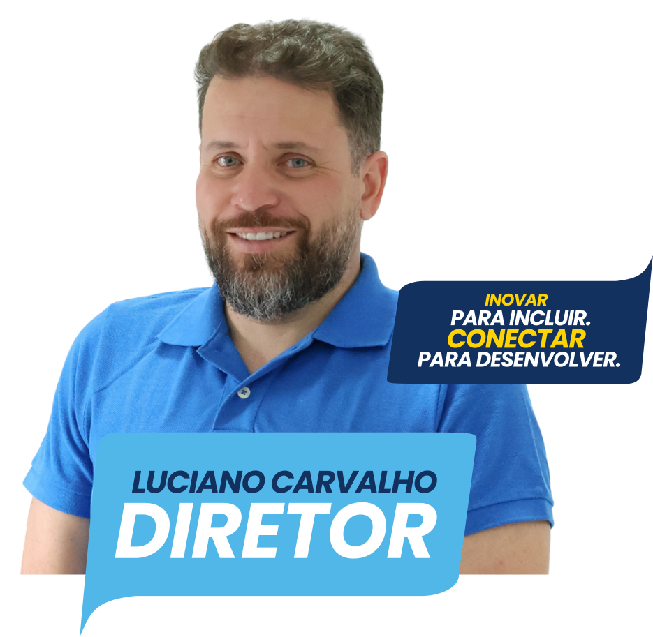
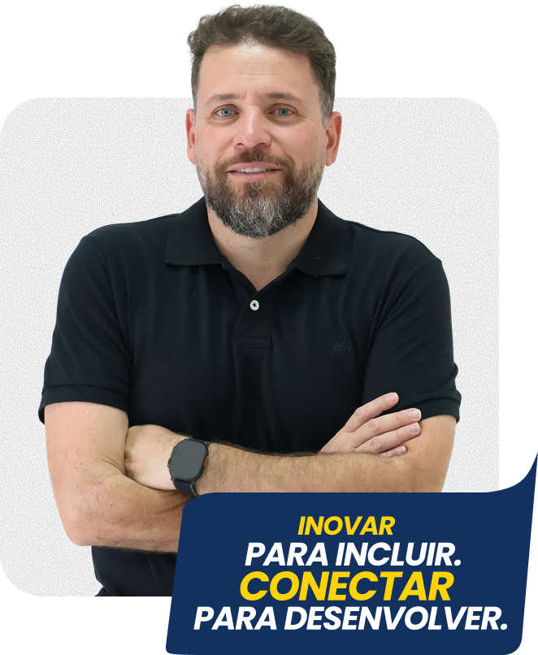

VOTE
VOTE
VOTE
VOTE
MINHA HISTÓRIA

PLANO DE TRABALHO
Eixo 1 — Ensino e Aprendizagem Inovadora
- Fortalecer a qualidade dos cursos técnicos e superiores por meio de abordagens educacionais contemporâneas, apoiadas por tecnologias digitais, inteligência artificial e ambientes híbridos de aprendizagem.
- Estabelecer e ampliar parcerias com instituições de ensino, empresas e organizações da área educacional.
- Ampliar os programas de monitoria acadêmica, promovendo permanência e êxito dos estudantes.
- Incentivar a integração entre teoria e prática, com ações interdisciplinares alinhadas às demandas do mundo do trabalho.
Eixo 2 — Pesquisa, Inovação e Empreendedorismo
- Criar e fortalecer o Centro de Inovação e Transformação Digital do Campus Machado.
- Estimular projetos de pesquisa e inovação em parceria com empresas e instituições públicas e privadas, contemplando as diversas áreas de atuação dos cursos.
- Promover evento institucional permanente de promoção da inovação e da tecnologia.
- Incentivar a cultura de inovação, empreendedorismo e proteção do conhecimento gerado no campus.
- Manter e fortalecer as semanas de curso e jornadas de área.
- Aproximar docentes, técnicos e estudantes das empresas e dos ecossistemas regionais de inovação.
Eixo 3 — Extensão e Integração com a Comunidade
- Reforçar a presença do campus junto à comunidade e aos municípios da microrregião.
- Ampliar projetos de extensão com impacto social, cultural, esportivo e tecnológico.
- Fortalecer parcerias com o setor produtivo regional.
- Consolidar o programa “IFSULDEMINAS Conectado com as Empresas”.
- Fortalecer a COPESE, com atuação integrada ao ensino durante todo o ano e presença ativa nos eventos institucionais.
- Incentivar o protagonismo estudantil nas ações extensionistas.
Eixo 4 — Esporte, Tradição e Desenvolvimento Humano
O Campus Machado sempre foi referência regional no esporte, desde os tempos da antiga Escola Agrotécnica Federal de Machado. Resgatar tradição significa fortalecer nossa identidade institucional e promover o desenvolvimento integral dos estudantes.
- Resgatar e fortalecer a tradição esportiva histórica do Campus Machado.
- Estruturar um Programa Institucional de Esporte e Desenvolvimento Humano, integrando competição, inclusão e qualidade de vida.
- Ampliar a participação do campus em competições regionais, estaduais e institucionais.
- Incentivar modalidades esportivas diversas, promovendo inclusão e acesso para todos.
- Integrar o esporte às políticas de permanência e êxito estudantil.
- Desenvolver projetos esportivos de extensão voltados à comunidade regional.
- Buscar parcerias para melhoria e modernização da infraestrutura esportiva.
Eixo 6 — Transformação Digital e Desburocratização
- Reforçar a modernização dos processos administrativos e acadêmicos, com foco em eficiência e agilidade.
- Manter e fortalecer painéis de indicadores para uma gestão baseada em dados e evidências.
- Dar ênfase estratégica ao Programa Smart Campus, consolidando o Campus Machado como referência em conectividade, eficiência, segurança e sustentabilidade.
Eixo 7 — Sustentabilidade e Infraestrutura
- Manter e ampliar ações de sustentabilidade ambiental.
- Integrar ações de eficiência energética ao Programa Smart Campus.
- Buscar parcerias e recursos externos para melhoria da infraestrutura.
- Implantar programa permanente de limpeza, conservação e organização do campus.
- Promover melhorias estruturais em salas, laboratórios e espaços de convivência.
- Dar atenção especial à Fazenda Escola como laboratório estratégico e fonte de geração de receita.
FALE COMIGO
Este é um projeto construído a muitas mãos. Qual a sua sugestão?